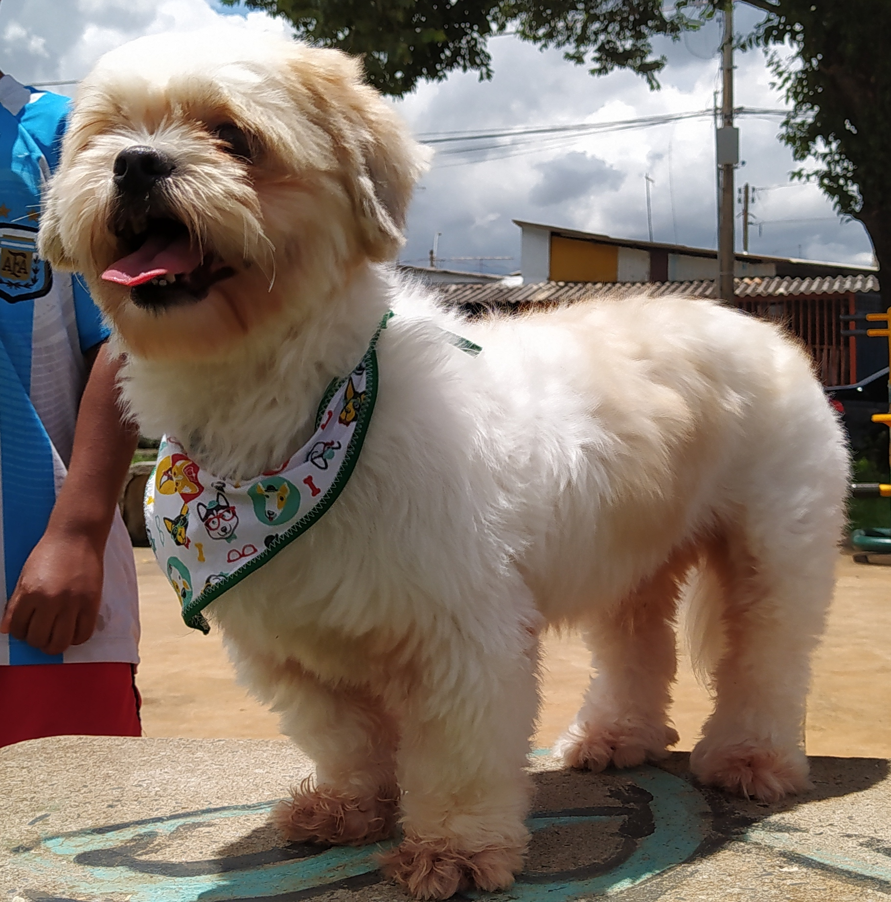

Quem Somos
A Meu Pet nasceu como um dos principais hemocentros e bancos de sangue para cães e gatos do Brasil. Hoje além de referência nesse segmento, contamos com um laboratório completo de análises clínicas e um centro de diagnósticos por imagem de alta tecnologia. A Pets&Life tem como principal responsável técnica e diretora geral a MSc. Josiele Cristine, médica veterinária e uma das maiores especialistas do Brasil em hemoterapia de cães e gatosDesde o início de suas atividades, a Meu Pet sempre adotou controles rígidos, estrutura adequada e alto grau de profissionalização em todos os seus processos. Nosso hemocentro e banco de sangue e nosso laboratório de análises clínicas contam com toda estrutura de equipamentos para oferecer serviços de alto nível. Em nosso departamento de diagnósticos por imagem, contamos com alguns dos mais modernos equipamentos para radiologia e ultrassom do país.
Desde o início de suas atividades, a Meu Pet sempre adotou controles rígidos, estrutura adequada e alto grau de profissionalização em todos os seus processos. Nosso hemocentro e banco de sangue e nosso laboratório de análises clínicas contam com toda estrutura de equipamentos para oferecer serviços de alto nível. Em nosso departamento de diagnósticos por imagem, contamos com alguns dos mais modernos equipamentos para radiologia e ultrassom do país.
